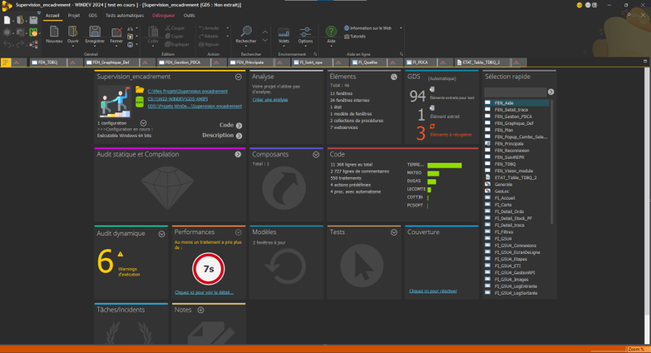

Stage 1 — 2024
Développement applicatif — Windev
Première immersion en entreprise : prise en main de l'environnement Windev, développement d'outils de suivi de production et collaboration avec les équipes métier.
Windev
SQL
Voir le détail